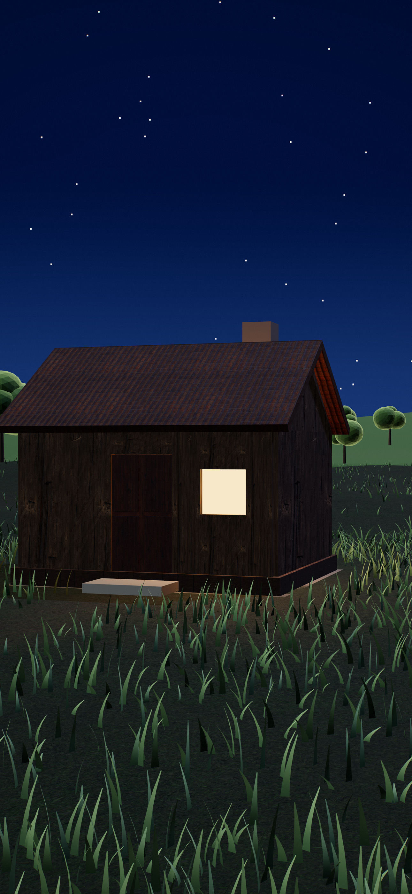

누가 5번 행성을 먹었을까 · 1번 숨바꼭질 행성 · 가입·추천인 코드·결제·광고 링크 없어.
이 행성의 규칙: 거인이 눈을 뜨면 단짝부터 숨겨
넌 친구가 서툴러도 떠나지 않고 옆에서 챙기는 사람이야.
강점
넌 친구가 실수하는 순간에 모른 척하지 않고 옆에서 같이 수습해. 그래서 친구들은 너랑 있을 때 실수해도 덜 무서워해.
약점
넌 친구 실수를 매번 대신 해 줘서, 친구가 스스로 고칠 일이 없어지는 편이야. 같은 실수가 두 번째면 대신 해 주지 말고 친구가 직접 하게 둬.
1번 숨바꼭질 행성

열린 그림을 길게 눌러 저장하면 사진 앱에 담겨.
인스타 앱 안에서 저장이 안 되면 오른쪽 위 ⋯ → 외부 브라우저로 열기.
넌 친구가 서툴러도 떠나지 않고 옆에서 챙기는 사람이야. 1번은 숨을 곳은 제일 많은데, 네 단짝이 숨바꼭질을 진짜 못하는 행성이야. 거인이 찾기 시작하면 덤불 위로 삐죽 나온 노란 모자 하나 때문에 둘 다 들킬 수 있어. 그걸 알고도 골랐다면, 넌 친구가 서툰 걸 알면서도 옆에 남는 쪽이야.
친구가 발표하다가 말이 꼬여서 얼굴이 빨개졌어. 다들 고개를 숙이는데, 넌 손을 들고 "아까 그 부분 다시 설명해 줄래?" 하고 물어. 친구는 그 틈에 숨을 고르고 끝까지 발표를 마쳐.
이게 네 강점이야. 넌 친구가 실수하는 순간에 모른 척하지 않고 옆에서 같이 수습해. 그래서 친구들은 너랑 있을 때 실수해도 덜 무서워해.
조심할 점은 같은 실수가 반복될 때 나와. 친구가 약속 시간을 늘 헷갈려서 네가 매번 다시 알려 줘. 다른 친구들이 짜증 내면 넌 "내가 챙길게" 하고 넘겨. 그러다 친구는 계속 헷갈리고, 너만 계속 바빠. 넌 친구 실수를 매번 대신 해 줘서, 친구가 스스로 고칠 일이 없어지는 편이야.
같은 실수가 두 번째면 대신 해 주지 말고 친구가 직접 하게 둬. "이번엔 네가 알람 맞춰 봐." 이렇게 넘겨 주면 돼.
같은 행성을 골라도 고른 이유는 사람마다 달라. 이 풀이는 재미로 보는 거니까, 와닿는 부분만 가볍게 가져가.
넌 첫인상만 보고 사람을 거르지 않는 사람이야.
강점
넌 낯선 사람을 겉모습으로 판단하지 않고, 직접 겪어 본 뒤에 판단해. 그래서 다른 사람들이 놓친 좋은 사람을 네가 먼저 알아봐.
약점
넌 겉모습으로 판단하지 않으려다, 네 첫 느낌까지 무시하는 편이야. 찜찜한 느낌이 들면 넘기지 말고 하나만 더 확인해 봐.
넌 일이 최악으로 꼬여도 쉽게 포기하지 않는 사람이야.
강점
넌 다들 당황할 때 할 수 있는 것부터 하나씩 해. 그래서 일이 크게 꼬인 날, 끝까지 남아서 해결하는 사람이 너야.
약점
넌 끝까지 버티다가 그만둘 때를 놓치는 편이야. 같은 데서 세 번 막히면 버티지 말고 방법을 바꿔 봐.
넌 걱정보다 좋은 점을 먼저 보는 사람이야.
강점
넌 일이 틀어져도 그 안에서 재밌는 걸 먼저 찾아내. 그래서 네가 있으면 분위기가 쉽게 가라앉지 않아.
약점
넌 "괜찮겠지" 하다가 준비를 늦게 시작하는 편이야. 일정이 잡히면 그날 바로 10분만 먼저 해 봐.
더 재밌게 고치려고, 이름 없이 누른 버튼·머문 시간만 세. 쓴 글·아이디는 안 보내. 자세히